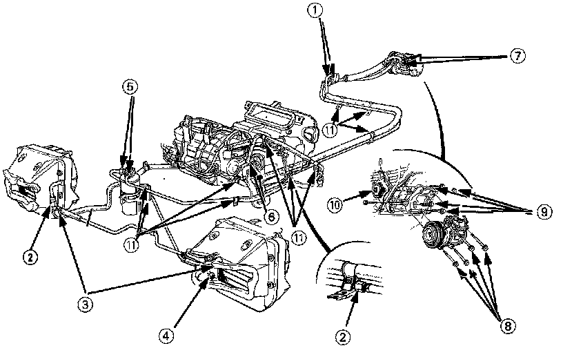

Heating and Air Conditioning: Specifications

(1) Suction hose and discharge hose to A/C lines: 22 N-m 12.2 kg-m, 16 lb-ft)
(2) Discharge line C (both sides): 23 N-m (2.3 kg-m, 17 lb-ft)
(3) Condenser line A (both sides): 23 N-m (2.3 kg-m, 17 lb-ft)
(4) Condenser line C to left side condenser: 14 N-m (1.4 kg-m, 10 lb-ft)
(5) Receiver-dryer: 14 N-m (1.4 kg-m, 10 lb-ft)
(6) Receiver line and suction line to heater assembly: 22 Nm (2.2 kg-m, 16 lb-ft)
(7) Compressor hose mounting bolts: 22 N-m (2.2 kg-m, 16 lb-ft)
(8) Compressor mounting bolts: 25 N-m 12.5 kg-m, 18 lb-ft)
(9) Compressor bracket mounting bolts: 50 N-m (4.5 kg-m, 36 lb-ft)
(10) Idler pulley center nut: 45 N-m (4.5 kg-m, 32.5 lb-ft)
(11) 6 mm bolt (corrosion resistant): 10 Nm (1.0 kg-m, 7.2 lb-f